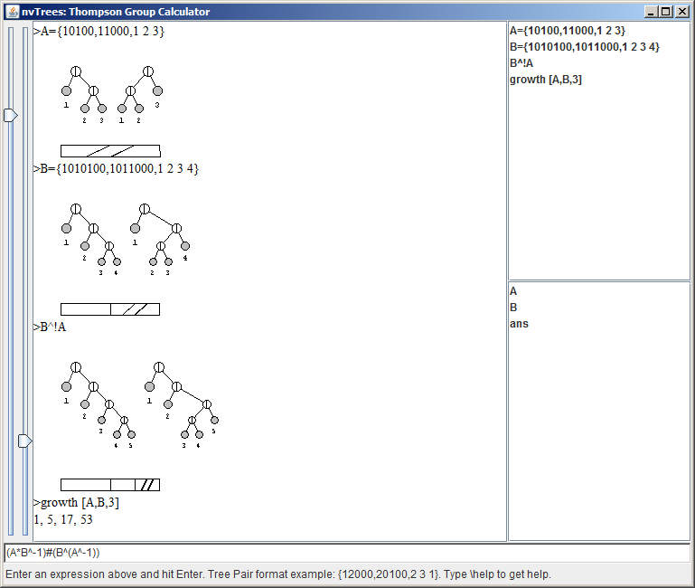

Screenshot:

|
Functionality:
- Compute products of elements of Thompson groups, output reduced tree pair (group multiplication)
- Compute conjugations, commutators, etc
- Visualize elements of Thompson groups:
- Tree pairs for elements of F, T, V, .., nV
- Pattern pairs for elements of 2V
- Rectangular diagrams for elements of F
- Compute the growth function #(n) up to a specified value of n and given generators
|